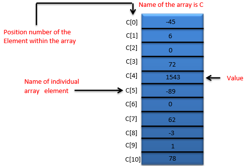

Arduino Tutorial
Arduino is a prototype platform (open-source) based on an easy-to-use hardware and software. It consists of a circuit board, which can be programed (referred to as a microcontroller) and a ready-made software called Arduino IDE (Integrated Development Environment), which is used to write and upload the computer code to the physical board.
Arduino provides a standard form factor that breaks the functions of the micro-controller into a more accessible package.
Audience
This tutorial is intended for enthusiastic students or hobbyists. With Arduino, one can get to know the basics of micro-controllers and sensors very quickly and can start building prototype with very little investment.
This tutorial is intended to make you comfortable in getting started with Arduino and its various functions.
Prerequisites
Before you start proceeding with this tutorial, we assume that you are already familiar with the basics of C and C++. If you are not well aware of these concepts, then we will suggest you go through our short tutorials on C and C++. A basic understanding of microcontrollers and electronics is also expected.
Board Description
In this chapter, we will learn about the different components on the Arduino board. We will study the Arduino UNO board because it is the most popular board in the Arduino board family. In addition, it is the best board to get started with electronics and coding. Some boards look a bit different from the one given below, but most Arduinos have majority of these components in common.
The Board Looks like

Arduino - Installation
After learning about the main parts of the Arduino UNO board, we are ready to learn how to set up the Arduino IDE. Once we learn this, we will be ready to upload our program on the Arduino board.In this section, we will learn in easy steps, how to set up the Arduino IDE on our computer and prepare the board to receive the program via USB cable.
- First you must have your Arduino board (you can choose your favorite board) and a USB cable. In case you use Arduino UNO, Arduino Duemilanove, Nano, Arduino Mega 2560, or Diecimila, you will need a standard USB cable (A plug to B plug), the kind you would connect to a USB printer
- You can get different versions of Arduino IDE from the Download page on the Arduino Official website. You must select your software, which is compatible with your operating system (Windows, IOS, or Linux). After your file download is complete, unzip the file.
- The Arduino Uno, Mega, Duemilanove and Arduino Nano automatically draw power from either, the USB connection to the computer or an external power supply. If you are using an Arduino Diecimila, you have to make sure that the board is configured to draw power from the USB connection. The power source is selected with a jumper, a small piece of plastic that fits onto two of the three pins between the USB and power jacks. Check that it is on the two pins closest to the USB port.
- After your Arduino IDE software is downloaded, you need to unzip the folder. Inside the folder, you can find the application icon with an infinity label (application.exe). Double-click the icon to start the IDE.
-
Once the software starts, you have two options
- Create a New Project
- Open Exixting Project Example
To create a new project, select File -> New
- To avoid any error while uploading your program to the board, you must select the correct Arduino board name, which matches with the board connected to your computer.
Go to Tools → Board and select your board.
- Select the serial device of the Arduino board. Go to Tools → Serial Port menu. This is likely to be COM3 or higher (COM1 and COM2 are usually reserved for hardware serial ports). To find out, you can disconnect your Arduino board and re-open the menu, the entry that disappears should be of the Arduino board. Reconnect the board and select that serial port.
- Before explaining how we can upload our program to the board, we must demonstrate the function of each symbol appearing in the Arduino IDE toolbar.
- Used to check if there is any compilation error.
- Used to upload a program to the Arduino board.
- Shortcut used to create a new sketch.
- Used to directly open one of the example sketch.
- Used to save your sketch.
- Serial monitor used to receive serial data from the board and send the serial data to the board
Arduino-Program Structure
In this chapter, we will study in depth, the Arduino program structure and we will learn more new terminologies used in the Arduino world. The Arduino software is open-source. The source code for the Java environment is released under the GPL and the C/C++ microcontroller libraries are under the LGPL.
Structure
Arduino programs can be divided in three main parts: Structure, Values (variables and constants), and Functions. In this tutorial, we will learn about the Arduino software program, step by step, and how we can write the program without any syntax or compilation error.
Let us start with the Structure. Software structure consist of two main functions −
- Setup() Fucntion
- Loop() Fuction

Void setup ( ) {
}
- PURPOSE − The setup() function is called when a sketch starts. Use it to initialize the variables, pin modes, start using libraries, etc. The setup function will only run once, after each power up or reset of the Arduino board.
- INPUT--
- OUTPUT--
- RETURN--
Void Loop ( ) {
}
- PURPOSE − After creating a setup() function, which initializes and sets the initial values, the loop() function does precisely what its name suggests, and loops consecutively, allowing your program to change and respond. Use it to actively control the Arduino board.
- INPUT--
- OUTPUT--
- RETURN--
Data types in C refers to an extensive system used for declaring variables or functions of different types. The type of a variable determines how much space it occupies in the storage and how the bit pattern stored is interpreted.
| void | boolean | char | unsigned char | byte | int | unsigned int | word |
| long | unsigned long | short | float | double | array | String-char array | String-object |
void
The void keyword is used only in function declarations. It indicates that the function is expected to return no information to the function from which it was called.
Void Loop ( ) {
// rest of the code
}
Boolean
A Boolean holds one of two values, true or false. Each Boolean variable occupies one byte of memory.
boolean val = false ; // declaration of variable with type boolean and initialize it with false
boolean state = true ; // declaration of variable with type boolean and initialize it with true
Char
A data type that takes up one byte of memory that stores a character value. Character literals are written in single quotes like this: 'A' and for multiple characters, strings use double quotes: "ABC".
However, characters are stored as numbers. You can see the specific encoding in the ASCII chart. This means that it is possible to do arithmetic operations on characters, in which the ASCII value of the character is used. For example, 'A' + 1 has the value 66, since the ASCII value of the capital letter A is 65.
Char chr_a = ‘a’ ;//declaration of variable with type char and initialize it with character a
Char chr_c = 97 ;//declaration of variable with type char and initialize it with character 97

Before we start explaining the variable types, a very important subject we need to make sure, you fully understand is called the variable scope.
What is Variable Scope?
Variables in C programming language, which Arduino uses, have a property called scope. A scope is a region of the program and there are three places where variables can be declared. They are −
- Inside a function or a block, which is called local variables.
- In the definition of function parameters, which is called formal parameters.
- Outside of all functions, which is called global variables.
Local Variables
Variables that are declared inside a function or block are local variables. They can be used only by the statements that are inside that function or block of code. Local variables are not known to function outside their own. Following is the example using local variables −
Void setup () {
}
Void loop () {
int x , y ;
int z ; Local variable declaration
x = 0;
y = 0; actual initialization
z = 10;
}
Global Variables
Global variables are defined outside of all the functions, usually at the top of the program. The global variables will hold their value throughout the life-time of your program.
A global variable can be accessed by any function. That is, a global variable is available for use throughout your entire program after its declaration.
The following example uses global and local variables −
Int T , S ;
float c = 0 ; Global variable declaration
Void setup () {
}
Void loop () {
int x , y ;
int z ; Local variable declaration
x = 0;
y = 0; actual initialization
z = 10;
}
An array is a consecutive group of memory locations that are of the same type. To refer to a particular location or element in the array, we specify the name of the array and the position number of the particular element in the array.
The illustration given below shows an integer array called C that contains 11 elements. You refer to any one of these elements by giving the array name followed by the particular element’s position number in square brackets ([]). The position number is more formally called a subscript or index (this number specifies the number of elements from the beginning of the array). The first element has subscript 0 (zero) and is sometimes called the zeros element.
Thus, the elements of array C are C[0] (pronounced “C sub zero”), C[1], C[2] and so on. The highest subscript in array C is 10, which is 1 less than the number of elements in the array (11). Array names follow the same conventions as other variable names.
A subscript must be an integer or integer expression (using any integral type). If a program uses an expression as a subscript, then the program evaluates the expression to determine the subscript. For example, if we assume that variable a is equal to 5 and that variable b is equal to 6, then the statement adds 2 to array element C[11].
Let us examine array C in the given figure, more closely. The name of the entire array is C. Its 11 elements are referred to as C[0] to C[10]. The value of C[0] is -45, the value of C[1] is 6, the value of C[2] is 0, the value of C[7] is 62, and the value of C[10] is 78.
To print the sum of the values contained in the first three elements of array C, we would write −
Serial.print (C[ 0 ] + C[ 1 ] + C[ 2 ] );
To divide the value of C[6] by 2 and assign the result to the variable x, we would write −
x = C[ 6 ] / 2;
Declaring Array
Arrays occupy space in memory. To specify the type of the elements and the number of elements required by an array, use a declaration of the form −
type arrayName [ arraySize ] ;
The compiler reserves the appropriate amount of memory. (Recall that a declaration, which reserves memory is more properly known as a definition). The arraySize must be an integer constant greater than zero. For example, to tell the compiler to reserve 11 elements for integer array C, use the declaration −
int C[ 12 ]; // C is an array of 12 integers
Example usign Array
int n[ 10 ] ; // n is an array of 10 integers
void setup () {
}
void loop () {
for ( int i = 0; i < 10; ++i ) // initialize elements of array n to 0 {
n[ i ] = 0; // set element at location i to 0
Serial.print (i) ;
Serial.print (‘\r’) ;
}
for ( int j = 0; j < 10; ++j ) // output each array element's value {
Serial.print (n[j]) ;
Serial.print (‘\r’) ;
}
}
Output
Element
Value
0
0
1
0
2
0
3
0
4
0
5
0
6
0
7
0
8
0
9
0